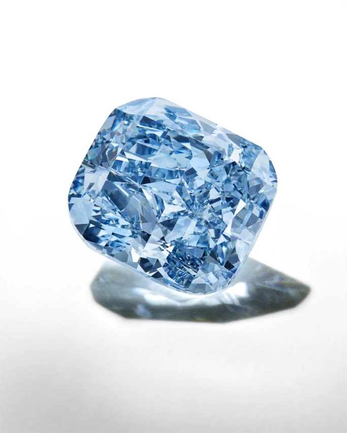
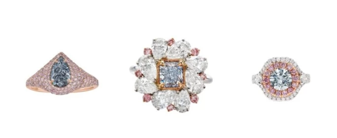
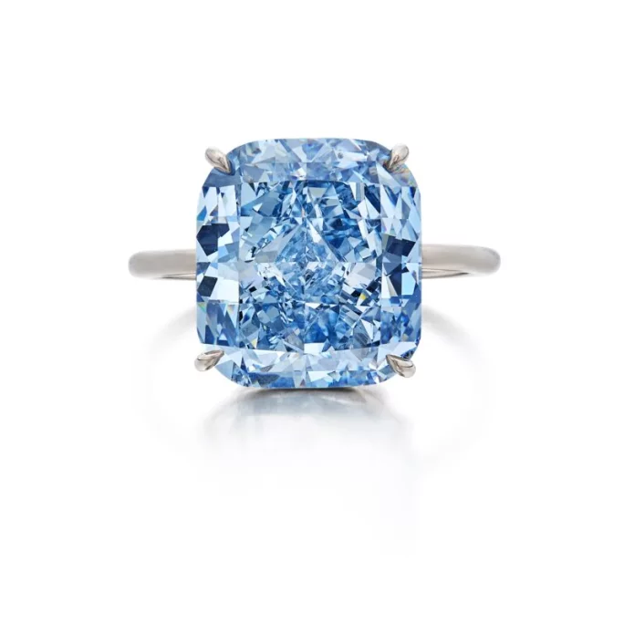
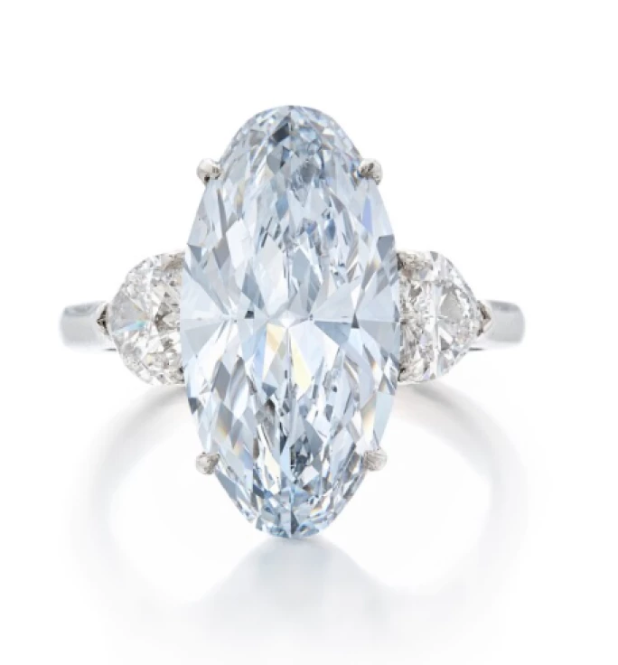
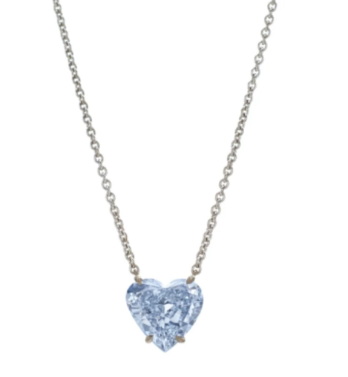
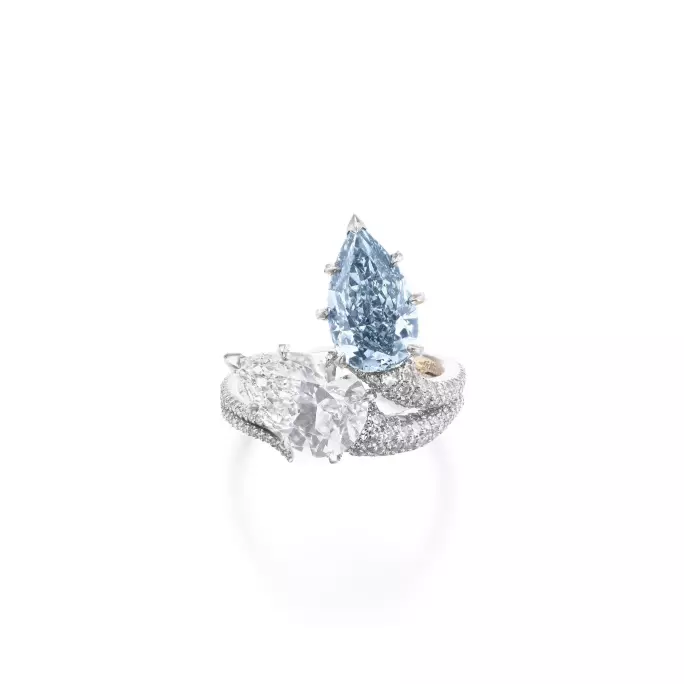
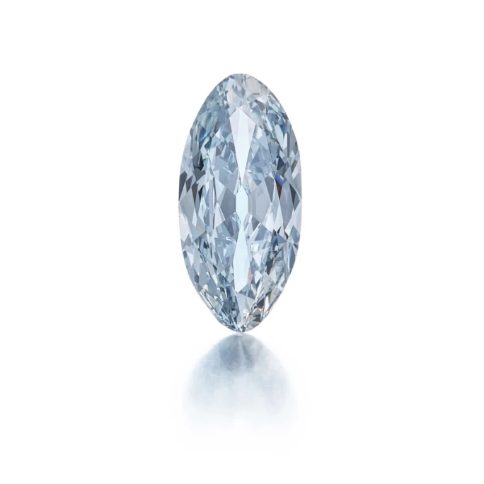
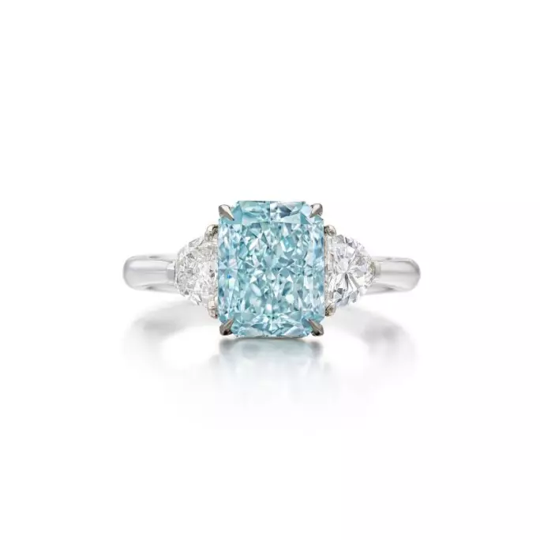
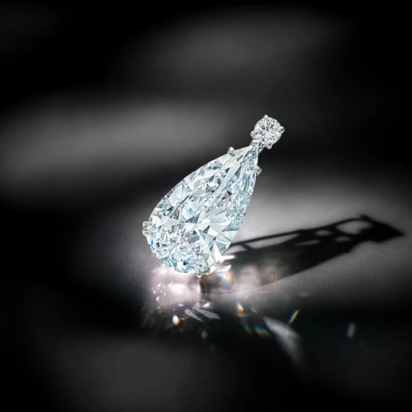

譯自 Lydia Dokko · Sotheby's
深入探尋藍鑽的奧秘，細賞蘇富比近期呈獻的矚目珍品。
藍鑽簡史
藍鑽的歷史可遠溯至古印度戈爾孔達地區的科盧爾礦脈；這是已知最早的藍色瑰寶現世之地，孕育了諸如 15 世紀「神像之眼」（Idol's Eye）與 17 世紀「希望之鑽」（Hope Diamond）等不朽傳奇。古時，藍鑽多產自印度與巴西。近百年來，南非的普列米爾礦（後更名為庫里南礦）亦偶有零星發現。在浩瀚的天然鑽石礦藏中，藍鑽的佔比不足 0.02%，彌足珍貴。與其他彩鑽的品鑒之道相似，藍鑽的價值首先取決於其淨度與色彩強度，其次是尺寸，最後才是切工品質。
藍鑽是最稀有的彩鑽之一。其藍色源於硼元素，而氮元素亦對其色彩強度有所影響。硼元素取代了鑽石晶體結構中的部分碳原子，能造就從一抹極淺淡的藍色幽光，到深邃幽遠的湛藍華彩。
藍鑽主要開採自南非的庫里南礦與博茨瓦納的奧拉帕礦。澳洲的阿蓋爾礦場亦曾是高品質藍鑽的重要來源，不過已於 2020 年關閉。

「地中海之藍」
藍鑽的品級鑒定
藍鑽的品鑑和分級與白鑽相似，皆依循色彩、淨度、切工及克拉重量等核心準則。其中，色彩品級乃是決定藍鑽價值的靈魂所在。色彩分類依據色調，即鑽石的實際顏色，包括綠藍、灰藍及紫藍等修飾色調。色澤的深淺，從極致清雅到濃郁深沉，亦是衡量其美感的重要因素。最後是飽和度，即色彩強度。色彩飽和度高，色澤鮮濃欲滴，自然更受市場青睞。至於淨度、切工及克拉重量的評級標準，則與其他鑽石一脈相承，嚴謹如一。
美國寶石研究院（GIA）採用以下級別描述藍鑽的色彩：
微藍
極淡藍
淡藍
淡彩藍
彩藍
濃彩藍
艷彩藍
深彩藍
評級為艷彩藍與深彩藍的藍鑽色彩最為濃郁飽滿，是藏家心中最為渴求的珍品。艷彩特指色澤介於中等至深邃、且飽和度達到濃至極濃的藍鑽。GIA 曾深入研究 462 顆藍鑽，其中僅 1% 達到艷彩級別，足見其稀世難求。
藍鑽的淨度評級與白鑽相似，從無瑕到含有內含物。切工評級亦與白鑽類同，考量其比例、對稱及拋光。藍鑽最受歡迎的花式切割包括枕形、方形、橢圓形及梨形，因為這些切割能增強色彩，並在琢磨過程中將損耗降至最低。克拉重量的計量與白鑽相同。蘇富比建議僅購藏附有 GIA 認證的藍鑽。
藍鑽的切割藝術
藍鑽的切割過程與近無色鑽石或其他彩鑽迥異。藍鑽原石通常呈現不規則、不對稱的晶體形態，其藍色色調亦可能在原石晶體中分佈不均。切割師需仔細研究原石的結晶方向及寶石特性，方能充分展現其色彩潛力與整體美感。故此，切割與拋光藍鑽需要極高水平的經驗與專業知識。為達致最佳視覺效果，專業鑽石切割師往往會改良傳統切割方式。

藍鑽戒指，綴以粉紅鑽石
蘇富比呈獻之藍鑽瑰寶
每年，蘇富比均有幸呈獻一些世間最稀有的藍鑽，且屢屢創下令人矚目的拍賣紀錄。藍鑽之所以令全球藏家心馳神往，不僅因其絕世稀有，更因其與皇室貴冑的深厚淵源，如傳奇的「希望之鑽」與「維特巴哈·格拉夫鑽石（Wittelsbach-Graff Diamond）」。此外，藍鑽歷來便是財富與權力的象徵，常被鑲嵌於皇冠、權杖及各式皇家珠寶之上，用於加冕典禮、婚禮及其他皇家慶典。
且讓我們一同細賞精選的藍鑽珍品，領略其非凡魅力。

「地中海之藍」枕形改良明亮式切割艷彩藍鑽，10.03 克拉
「地中海之藍」艷彩藍鑽，成交價17,860,000瑞士法郎
2025年5月，「地中海之藍」以17,860,000瑞士法郎（2,150萬美元）成交。這枚古墊形藍鑽重10.03克拉，豔彩色澤純正奪目，淨度絕佳。原石採自南非，重31.93克拉，經巧匠精心切割成古墊形。切割鑽石的過程歷時六個月，全程均以照片精細記錄，為這枚藍鑽的非凡歷程留下獨一無二的珍貴圖像紀錄。「地中海之藍」是 IIb 型鑽石，以獨特藍彩著稱，為世罕見，色澤濃度和淨度均非常出色，實屬大自然的瑰麗傑作。這枚藍鑽以高價成交，足證要打造世上最令人夢寐以求的珍稀彩鑽，絕對少不了卓著的專業技術和準確度。

5.83克拉淡彩藍色鑽石戒指
5.83克拉淡彩藍色鑽石戒指，成交價1,206,500瑞士法郎
2025年5月，這枚淡彩藍色鑽石戒指以1,206,500瑞士法郎（150萬美元）成交。戒指以一枚重5.83克拉的橢圓形淡彩藍色鑽石為主石，兩旁各鑲一枚心形鑽石。主石色澤柔和迷人，附有 GIA 報告，指出鑽石色彩天然，內部無瑕。主石兩旁的心形鑽石分別重0.52克拉和0.50克拉，經 GIA 鑑定為D色和內部無瑕，為整枚戒指增添優雅氣質，更顯稀貴。這枚戒指形制精緻，富有浪漫色彩，突顯彩鑽在經典鑲工襯托下的雋永魅力。

彩藍色鑽石吊墜項鏈
4.05克拉彩藍色鑽石吊墜項鏈，成交價952,500瑞士法郎
這條彩藍色鑽石吊墜項鏈在2025年5月以952,500瑞士法郎（110萬美元）成交。吊墜鑲嵌一枚重4.05克拉的心形彩藍色鑽石，繫於長420毫米的經典纜扣項鏈。心形彩藍色鑽石切工對稱，色澤清麗迷人，整條項鏈更顯高貴精緻。所附 GIA 報告指出鑽石為彩藍色，色彩天然，內部無瑕，屬 IIb 型鑽石，這個級別的藍鑽非常珍稀，淨度和導熱性皆出類拔萃，深受追捧。這條項鏈以浪漫精緻的方式呈現大自然中罕見的稀世鑽石。

「Toi et Moi」藍鑽配白鑽戒指，鑲嵌3.03克拉梨形濃彩藍鑽，天然色彩，I1 淨度
「Toi et Moi」梨形濃彩藍鑽戒指，成交價93萬美元
5 月，蘇富比以 825,500 瑞士法郎（93 萬美元）售出一枚鑲嵌濃彩藍鑽的「Toi et Moi」戒指。此梨形濃彩藍鑽重 3.03 克拉，擁有天然色澤，淨度為 I1 級。戒指亦鑲嵌一枚重 2.82 克拉的梨形白鑽，色澤達 D 級，淨度為 VVS1 級。這款匠心獨運的設計，將焦點凝聚於藍鑽的深邃魅力之上；而「Toi et Moi」造型的戒指亦日益受到現代新娘的青睞，成為傳統單顆主石訂婚戒指之外的時尚新選。

3.32克拉欖尖形彩灰藍鑽石，天然色彩，SI1 淨度，成交價72萬美元
彩灰藍鑽石 3.32 克拉｜72 萬美元
12 月，蘇富比以 72 萬美元售出一顆馬眼形彩灰藍鑽石。此天然鑽石重 3.32 克拉，SI1 淨度，為未鑲嵌裸石。

切角長方形改良明亮式切割濃彩藍綠鑽石，3.02 克拉，天然色彩，VS1 淨度
濃彩藍綠鑽石 3.02 克拉｜56 萬美元
4 月，蘇富比以 430 萬港元（即 56 萬美元）售出一枚濃彩藍綠鑽石。此切角長方形改良明亮式切割濃彩藍綠鑽石重 3.02 克拉，擁有天然色澤，淨度達 VS1 級。這枚 3 克拉的藍綠鑽石，無論在尺寸還是其獨特的修飾色調方面均屬罕見，使其成為一顆真正與眾不同、極具收藏價值的瑰寶。4 月，蘇富比以 430 萬港元（即 56 萬美元）售出一枚濃彩藍綠鑽石。此切角長方形改良明亮式切割濃彩藍綠鑽石重 3.02 克拉，擁有天然色澤，淨度達 VS1 級。這枚 3 克拉的藍綠鑽石，無論在尺寸還是其獨特的修飾色調方面均屬罕見，使其成為一顆真正與眾不同、極具收藏價值的瑰寶。
藍鑽價格
天然藍鑽的價格差異甚大，但總體而言，其價格遠高於相似淨度與克拉重量的白鑽及其他彩鑽。在所有開採的鑽石中，僅約 0.02% 為天然藍鑽。「希望之鑽」是全球最負盛名的藍鑽，重 45.2 克拉，呈現深彩灰藍色調，屬 IIb 型鑽石，價值逾 2 億美元。
蘇富比售出的最昂貴藍鑽，是於 2022 年以 5,750 萬美元天價成交的「De Beers 戴比爾斯 浩宇之藍」（The De Beers Blue）。此鑽採用階梯式切割，重 15.10 克拉，色澤達艷彩藍級別，內部無瑕，屬 IIb 型鑽石。蘇富比拍出的六顆最頂級藍鑽，價格範圍從 2,580 萬美元至 5,750 萬美元不等，每顆都標誌著拍賣史上的重要時刻。
一枚 1 克拉藍鑽的價格，從微藍的 3 萬至 5 萬美元，躍升至深彩藍的逾百萬美元不等。2021 年，一枚 1.01 克拉彩灰藍鑽石以 19 萬美元售出，而一顆 1.08 克拉梨形艷彩藍鑽則以 93 萬美元成交。色彩等級達到濃彩藍及以上的藍鑽，每克拉價格可輕易超過百萬美元。

梨形極淡藍鑽石 5.25 克拉，天然色彩，VVS1 淨度